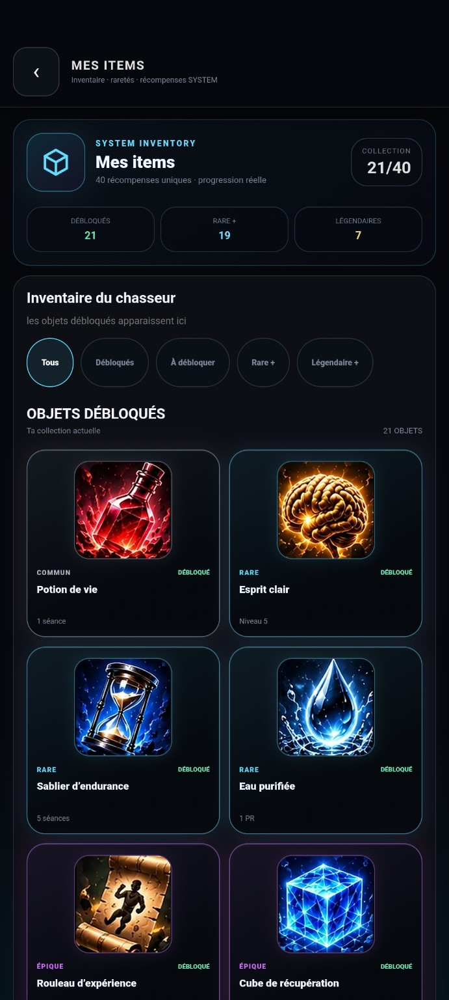
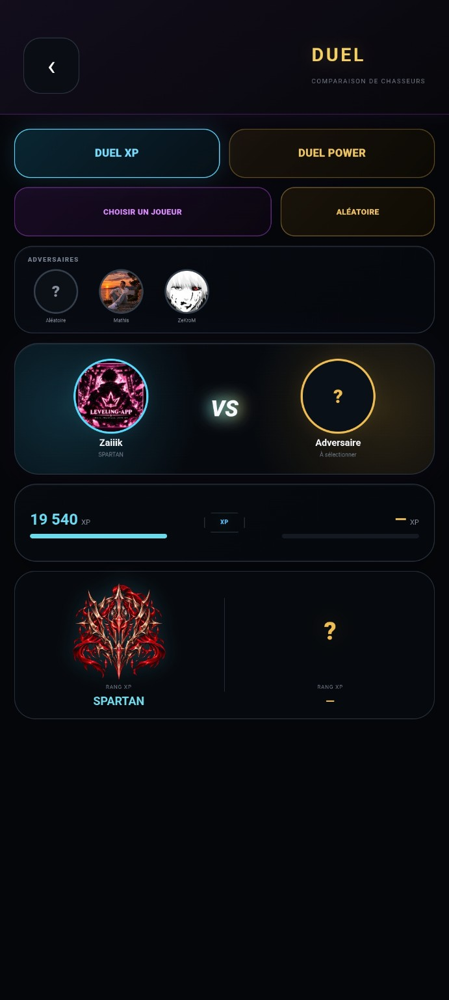
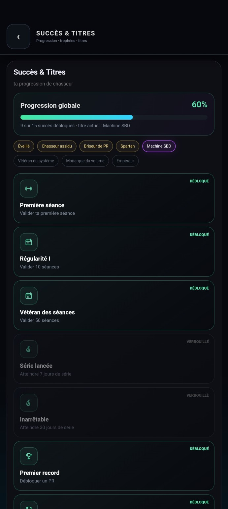

Suivre
Retrouver son programme et valider chaque étape de la séance.
Application active · Fitness gamifié
LEVELING-APP réunit programme, performances et motivation dans un univers où l’entraînement fait réellement évoluer votre profil.
Le concept
L’application ne se contente pas d’enregistrer des séances. Elle montre clairement ce que chaque effort construit dans le temps.
Programme, exercices, séries, charges, records et régularité alimentent une progression lisible. L’utilisateur avance dans son entraînement tout en faisant évoluer son niveau, son rang et son identité de chasseur.
Retrouver son programme et valider chaque étape de la séance.
Visualiser ses performances, son historique et ses records.
Transformer la régularité en niveaux, rangs et récompenses.
Ces captures proviennent de l’application réelle : inventaire, duel communautaire et progression du profil.



L’expérience
Blocs, jours et exercices restent organisés pour savoir exactement quoi faire.
Séries, répétitions, charges et records donnent une vision concrète des progrès.
XP, niveaux, rangs et récompenses rendent chaque étape visible.
Profils, classements et duels ajoutent une dimension sociale à l’entraînement.
Un projet d’application ?
NextLvl Digital transforme une idée en produit numérique clair, identifiable et capable d’évoluer.
Demander un devis